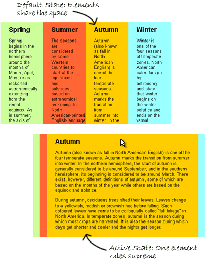

Update: I’ve created an advanced version of this technique that works in IE6! Read more here.
The Accordion Effect is fast becoming one of the most commonly used (and perhaps abused?) effects of the Web 2.0 world. Most JavaScript frameworks make such an effect fairly easy to pull off – heck, MooTools even built their reputation on it in the early days. So what makes this accordion effect special? It doesn’t require a single line of JavaScript.
First off, what is an “accordion” effect? Generally speaking, the accordion effect takes several larger elements and then compresses them into a small space so that only a small portion (like a heading) of most or all of the elements is visible. Then, when the user interacts with that element — either by clicking on it or maybe only mousing over — the accordion expands so that the element of interest is visible, and the other elements shrink down automatically. When it’s in use, it looks a bit like an accordion expanding and contracting: hence the name.
Our accordion will work exactly the same way: all of the elements will be partially visible when the user loads the page. And then when they mouse over a particular section, it will instantly expand – and the other elements will contract – to make reading more easy.

So how do we accomplish this trick? First, we start with our XHTML, which just consists of a couple of divs with some IDs applied:
<div id="accordion">
<div id="part1">
<p>This text is in part 1.</p>
</div>
<div id="part2">
<p>This text is in part 2.</p>
</div>
<div id="part3">
<p>This text is in part 3.</p>
</div>
<div id="part4">
<p>This text is in part 4.</p>
</div>
</div>
My first div defines where my accordion starts and ends. The divs nested inside are just parts of my accordion – they don’t even technically need IDs unless I want to style them differently. That’s all the XHTML it takes!
So now, let’s start building our accordion. We start by defining the physical limitations of our space:
#accordion {
width: 500px;
margin: 100px auto; }
All I’ve done is give my accordion a specific width and centered it in the page for a nice visual effect. Now, I have to create the default state for the divs inside of my accordion:
#accordion div {
float: left;
width:25%;
height: 300px;
overflow: hidden;}
This snippet floats all of my divs to the left and gives them a specific width and height. I’ve chosen a width of 25% because I have four elements in my accordion, so they all split that width up evenly by default. If I’d had five elements, I would have used 20%, and so on. My height of 300 pixels also becomes the height of my accordion div.
The overflow: hidden part here is also crucially important. This is what prevents my divs from either resizing to fit their content or spilling their content out of the containing div and onto our page. It also creates a nice visual effect… people will wonder what content they’re missing, and will mouse over the area to investigate.

So now that we’ve created our default state, we need to create our hover or “active” state. This requires two CSS rules. The first looks like this:
#accordion:hover div { width: 20px; }
We’re using the :hover pseudo-class here in a pretty creative way – we’re telling all of the divs inside of the div we’re hovering over to change. Specifically, we’re shrinking them all down to 20 pixels to make room for our expanded accordion section. So now we just need to make sure it expands:
#accordion:hover div:hover {
width: 440px;
overflow: auto; }
The :hover pseudo-class comes into play here again. Now, we’re applying styles to an element we’re hovering over, inside of an element we’re hovering over. We’re styling this element differently than our others by giving it a specific width – 440 pixels, i.e. 500 pixels minus the 20 pixels taken up by our other three divs – and setting its overflow to “auto.” These two classes cause our active div to expand, and then give it a scroll bar if the content is too long.
And that’s all there is to creating a CSS-only accordion box! If you’d like to see it in action, click here. The only change I’ve made to the full version is I’ve added a few background styles and some interior padding to each of the accordion sections to make them stand out and look a little more attractive.
This example creates a horizontal accordion box. But it’s just as easy to create a vertically oriented accordion. All we really need to do is eliminate the floats on our nested divs and turn most of our width tags into height tags. Here is the markup:
#accordion {
width: 500px;
height: 400px;
margin: 20% auto; }
#accordion div {
height:25%;
overflow: hidden;}
#accordion:hover div {
height: 20px; }
#accordion:hover div:hover {
height: 340px;
overflow: auto; }
And you can see it in action here.
As with any trick this cool, there are some caveats. Most significantly: this technique does not work in IE6, (update: now works in IE6! Read more here) because IE6 doesn’t support hover states on anything other than anchors. Therefore, you can make it work if you’re willing to make a sacrifice: if you wrap all of your divs in anchor tags, and then apply the hover state to those anchors instead of your divs, the technique should work the same (I haven’t tried it, though). However, that wouldn’t be particularly semantic or valid, so I’m not showing it here.
Also, if you apply any padding or borders to your #accordion div, that can cause some problems. The border and padding are part of your div, and therefore part of your :hover class. However, if you’re hovering over the containing div’s padding, you aren’t hovering over one of the sections of your accordion – meaning all of your interior divs will shrink down to their smallest size, and none will grow to fill the space. It took me half an hour of debugging to figure this one out. :)
So there you have it. Use it, share it, love it. And let me know in the comments if you come up with a particularly interesting or attractive implementation – mine is obviously pretty simple!
Pingback: 30 Exceptional CSS Navigation Techniques
Pingback: 30种时尚的CSS网站导航条 | 酷壳
Pingback: 30个特殊的CSS导航技术 « Burning Fav’s Blog
Pingback: 30 Exceptional CSS Navigation Techniques | Blog YODspica Ltd
Pingback: Kevinwu’s Weblog » Blog Archive » 30个使用纯CSS完成的强大实践的优秀CSS技术和实例 css gallery
Pingback: 30 Exceptional CSS Navigation Techniques « Livefont Interactive
Pingback: Nvmind. | Interfaces in PHP, MySQL, XHTML/CSS, ActionScript and other technologies / 30 Exceptional CSS Navigation Techniques
Pingback: 神奇的CSS-25个样本迷死你 | 鹏博客
Pingback: 22个不错的CSS技术 | 酷壳
Hi, I was wondering if it was possible to set one of the columns to be wide on page load. And when ever the bar is not hovered that one column is always bigger. I hope this is understandable.
Pingback: Think Studio » Blog Archive » 30 Exceptional CSS Techniques and Examples
Pingback: 30 Exceptional CSS Navigation Techniques | Designurimagination Blog - Let Your Imagination Fly
Pingback: 30 CSS Navigation Techniques « Webdesignchennai’s Blog
Pingback: 40 Outstanding CSS Techniques And Tutorials | Arbenting
Pingback: 365必备资讯网 » Blog Archive » 25个高级CSS技巧教程
Pingback: Loves sunshine » Blog Archive » 30+css导航技术
Pingback: jsssc - 30个特殊的CSS导航技术
Pingback: You are now listed on FAQPAL
Pingback: 10 CSS tutorials that will make your website looks cool
Pingback: 30个特殊的CSS导航技术 « SonicHtml工作室- PSD转HTML / XHTML,CSS / W3C验证 / 多浏览器支持 / WordPress模板 / Joomla模板
Pingback: Design-Tut+ » 10 CSS tricks that make website looks cool instantly!
Pingback: Technology Blog / 10 CSS tricks that make website looks cool instantly.
Pingback: 25个高级CSS技巧教程 | 帕兰映像
Pingback: 10 Amazing CSS Techniques | CSSDOSE
Honestly, I’m not impressed in any way. First it breaks in Opera and second it doesn’t look good anyway.
Pingback: 22个不错的CSS网页特效技术 | 无名小站
Pingback: 30款时尚酷酷的CSS导航条 | 无名小站
Pingback: Discover the “Cool” of CSS: 25 Advanced CSS Techniques | Theme Center
Pingback: [转]30个优秀的CSS实例
I just wish there was a horizontal menu for this one. ;)
Pingback: 10 CSS tricks that make website looks cool instantly! | Theme Center
Pingback: 30 Exceptional CSS Techniques and Examples | Theme Center
Pingback: 30 Exceptional CSS Techniques and Examples @ tipBOX.net
Amazing !
I am a css-only fan too, but this is one off the most beautifull trick I saw.
Can permit me to suggest you to use the CSS3 “transition:;” property (works in firefox 3.6 with -moz- and in Chrome and Safari with -webkit-).
So you can give animation to your effet :
It will no more be instantly but the accordion effect will be gradual (I am maybe not very comprehensive, ’cause I am can’t speak very good english…).
You can see some animation effect on my home page, in the head menu (with Chrome, safari or Firefox 3.6).
I hope I have help you a bit^^
Long live css^^”
And I repeat, I find your effect amazing !
Pingback: 30个精选优秀的CSS实例 | 伟景博客
Pingback: 享受生活 » 22个不错的CSS技术
Pingback: 享受生活 » 30种时尚的CSS网站导航条
Pingback: 10 Top-Notch CSS Editors « HUE Designer
Pingback: 30个酷炫的CSS导航菜单 - 空杯网（EmptyCup.cn）- 前端设计资源分享!
Pingback: Saint John Web Design | Informative Computer Solutions » Blog Archive » The Best CSS Newbie Articles of 2009
Pingback: Dumplings! – Open Source Design - Spring10
Pingback: 精选30个国外优秀的CSS技术和实例【翻译】 « 悦宽网
Pingback: 40 Outstanding css Techniques And Tutorials » Arbenting - The Act of Being Creative
Pingback: 30个酷炫的CSS导航菜单 | Techtrack - 专注前端设计，分享科技资讯
Great to see a detailed article on CSS3. Thanks much!
Pingback: Improve Your CSS Skills With Pure CSS « Designdefine's Blog
Pingback: Improve Your CSS Skills With Pure CSS UI Components « Huy Nguyen's Blog
Pingback: Improve Your CSS Skills With Pure CSS UI Components Ajax Help W3C Tag
cool tutorial…
thanks for this!
here’s a simpler method, which works on all browsers i’ve tested so far (and i expect it to work in IE6 with the .htc trick mentioned above and here: http://www.xs4all.nl/~peterned/csshover.html
my method-
-eliminates your accordion margin, that’s unnecessary, just an aesthetic call which complicates your demo.
-eliminates one of your hovers, works without it
-eliminates your ‘clear:both’ div at the bottom of the accordion, works without it
-eliminates your accordion height, unnecessary for accordion functioning, that just pushes down content below the accordion even when the accordion is closed, leaving an empty gap below the accordion. someone might want that, but it’s an aesthetic call, and makes your code here more difficult to understand.
here’s the complete css:
#accordion {
width: 500px;
}
#accordion div {
height:60px;
overflow: hidden;
}
#accordion div:hover {
height: auto;
}
i was helped by the poster here: http://welovecss.com/showthread.php?s=20f8fc7c3bc1a456e906dde7837b927f&p=20980#post20980